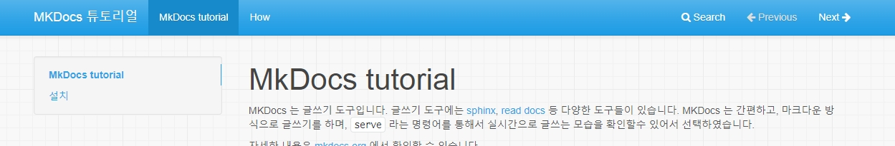

사용법¶
여러가지 사용법중에 기본적으로 필요한 사용법을 알아봅니다.
설정¶
MKDocs 의 설정은 루트에 있는 mkdocs.yml 이라는 파일에서 지정합니다.
아무설정도 안한 상태기 때문에 아래처럼 보일겁니다.
site_name: My Docs
사이트의 이름을 변경해보세요.
site_name: MKDocs 튜토리얼
아래처럼 사이트의 이름이 변경된걸 알 수 있습니다.

페이지 생성¶
저는 지금 docs/how.md 라는 파일을 새로 생성했습니다. 새로 생성하는 페이지는 모두 docs 폴더 하위에 만들면 됩니다.
mkdocs build 를 하면 site/how/index.html 이 생성이 됩니다.
네비게이션에는 index.md 의 첫번째 제목인 MKDocs tutorial 와 How 가 보입니다.

페이지의 이름과 구조를 변경할 수 있습니다.
mkdocs.yml 에서 페이지를 지정해주면 됩니다.
pages:
- 홈: index.md
- 사용법: how.md

이미지 폴더 만들기¶
지금 설명하는 모든 이미지는 docs/img 폴더에 이미지들이 들어가 있습니다.

빌드를 하면 img 폴더가 통채로 복사되어 site 폴더 안에 만들어 집니다.
테마 변경하기¶
테마는 기본테마와 서드파티테마가 있습니다. 기본테마는 설치과정없이 바로 사용할수 있고, 서드파티테마는 설치후 설정을 해줘야 합니다.
먼저 기본테마중에 자주 사용되는 ReadTheDocs 테마를 적용해보겠습니다.
yml 파일에 아래 구문을 추가합니다.
theme: readthedocs
변경된 테마를 볼 수 있습니다.